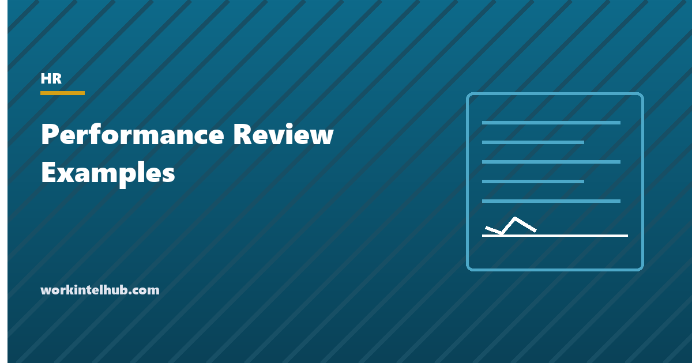

Performance Review Examples

A performance review is a written judgment of how someone did over a period, with evidence, a rating and what happens next. The phrases people search for are the easy part, and this page has sixty of them; what makes a review useful, and what makes it survive being challenged, is the specific behind each phrase. "Communicates well" is an opinion. "The written update on the March outage was clear enough that no meeting was needed" is a fact the employee can recognise and a reviewer can defend.
The builder below assembles a review from rated phrases with a slot for the evidence in each. The rest of the page gives the phrases by competency and rating, the rules for writing the hard ones, the bias patterns that distort ratings, and how the review connects to pay, plans and the file.
Performance review builder
Nothing typed here leaves your browser. Every phrase has a bracket to fill with a specific example; a review phrase without a specific behind it is an opinion, and opinions are what get reviews challenged.
Phrases by competency and rating
The builder holds two phrases for each of six competencies at each of five levels. The table shows the pattern at three levels; the bracketed items are where the evidence goes, and the builder fills them from the example you type.
| Competency | Exceeds (4) | Meets (3) | Needs improvement (2) |
|---|---|---|---|
| Quality of work | Produces accurate, complete work; the [deliverable] needed no rework and became the team's template | Meets the standard; occasional revisions needed; [area] would benefit from a second check | Work regularly needs revision before use; needs a checking step built into [process] |
| Productivity and results | Met all targets and exceeded [target]; carries a heavier load without loss of quality | Met the agreed targets; next step is [stretch] | Missed [target] by [margin]; has not reached the pace the role requires |
| Communication | Keeps stakeholders informed unprompted; handled [difficult conversation] with a clear outcome | Adequate; updates sometimes need requesting; summarise decisions in writing | Stakeholders did not know the status of [project]; updates must be proactive |
| Collaboration | Works well across teams; supported [colleague] through [situation] unasked | Cooperates and meets shared commitments; could contribute more across teams | Missed shared deadlines affecting [team]; peer feedback cites [behaviour] |
| Initiative and growth | Proposes and follows through; applied [training] to [work] | Performs the role as defined; next step is owning [area] end to end | Waits for direction on self-started work; last review's goals not pursued |
| Reliability and attendance | Dependable; rare misses flagged in advance; attendance consistent | Generally reliable; [number] commitments slipped without notice | Unexcused absences on [dates] affected coverage; see the attendance record |
Level 5 phrases describe something exceptional with a result attached; level 1 phrases refer to dates, prior feedback and the plan that follows, because a rating of 1 is a performance improvement plan in all but name. The review template covers the document around the phrases, and the self-evaluation examples the employee's side.
Writing the hard ones
- Facts, dates, numbers. "Missed the Q2 renewal target by 14 per cent" can be discussed; "underperformed" can only be resented. Every negative phrase in the builder has a bracket for exactly this reason.
- Nothing new. A review should contain no criticism the employee is hearing for the first time. If it does, the failure is the manager's, and the honest review says so and resets from here.
- Behaviour, not character. "Interrupted colleagues in the last three planning meetings" is a behaviour with a fix. "Aggressive" is a label with a grievance attached.
- The next step in the same paragraph. What must change, by when, with what support, measured how. A rating of 2 without that is a complaint.
- Consistent with the file. A 2 for reliability after a year of no attendance notes, or a 4 for quality after two written warnings, is the inconsistency a lawyer looks for. The write-ups and the review should tell one story.
- Protected absence and activity stay out. FMLA leave, accommodation requests, complaints and jury service do not appear in a reliability rating, and a review that dips in the period after any of them needs a documented, unrelated reason.
The biases that distort ratings
| Bias | What it looks like | Counter |
|---|---|---|
| Recency | The last month decides the year's rating | Keep notes through the period; review them before writing |
| Halo and horns | One strong or weak trait colours every competency | Rate each competency from its own evidence before looking at the total |
| Central tendency | Everyone gets a 3 | Force a distribution of evidence, not of ratings: what would a 5 look like here? |
| Leniency | Everyone gets a 4 to avoid the conversation | Calibration across managers; a 4 with no evidence is challenged |
| Similarity | People like the manager rate higher | Written anchors for each level, applied to everyone |
| Idiosyncratic rater effect | Ratings say more about the rater than the rated; research puts over half of rating variance on the rater | Multiple raters, calibration, and evidence over adjectives |
The last row is the reason the builder insists on evidence. Studies of rating systems since the 1990s have consistently found that who does the rating explains more of the score than who is rated. A phrase with a date and a number attached is the only part of a review that survives that finding.
What the review connects to
The rating feeds the merit increase, usually through a matrix that crosses it with position in the pay band, which is why calibration across managers matters: an inflated rating is a pay decision. The goals for the next period become the individual's share of the team's OKRs and the agenda of the one-on-ones that follow. A rating of 1 or 2 opens a performance improvement plan with dates. And the signed document goes in the personnel file, where it will be read alongside every write-up and every raise letter by anyone who later has to explain a decision about this person.
The signature line matters. It acknowledges that the review was discussed, not that the employee agrees, and the employee's comments box is where disagreement is recorded. A review the employee refused to sign is noted as such and filed anyway.
Key takeaways
- A review phrase is only as good as the specific behind it. Every phrase in the builder has a bracket for a date, a number or a document.
- Rate each of six competencies from its own evidence: quality, results, communication, collaboration, initiative and reliability.
- Nothing in a review should be new to the employee. Facts and behaviours, not labels; the next step in the same paragraph.
- Keep the review consistent with the file and keep protected leave and activity out of it.
- Recency, halo, central tendency, leniency and rater effects distort ratings; notes through the period and calibration across managers are the counters.
- The rating drives pay, the goals drive the next quarter, and the signed document lives in the file.
Frequently asked questions
What should a performance review include?
A rating and written assessment for each competency the role requires, with a specific example as evidence for each; an overall rating; two or three goals for the next period with measures and dates; the employee's comments; and signatures acknowledging the discussion. The builder on this page produces that structure.
What are good performance review phrases?
Ones with a specific attached. 'Delivered the Q2 renewal report ahead of schedule with no rework' beats 'good time management'. The sixty phrases here are grouped by competency and rating and each carries a bracket for the example, because the example is what the employee recognises and the reviewer can defend.
How do you write a negative performance review?
With dates, numbers and behaviours rather than labels; with no criticism the employee has not already heard; with what must change, by when, with what support and measured how in the same paragraph; and consistent with the write-ups and notes already in the file. A rating of 1 or 2 should lead into a performance improvement plan.
How many competencies should a review rate?
Five to seven. The six used here, quality, results, communication, collaboration, initiative and reliability, cover most roles; managerial roles add people leadership. More than seven and the ratings blur; fewer than four and the review becomes a single impression.
Should employees sign their performance review?
Yes, to acknowledge that it was discussed, not that they agree. The employee comments section records any disagreement. If an employee declines to sign, the manager notes the refusal and the date and files the review anyway.
What is the biggest source of error in performance ratings?
The rater. Research on rating systems consistently finds that who does the rating explains more of the variance than who is rated, on top of recency, halo, leniency and central tendency effects. Evidence-based phrases, notes kept through the period and calibration across managers are the practical counters.